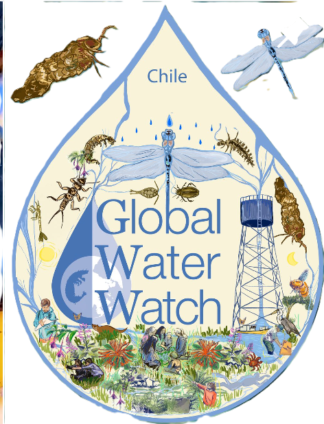
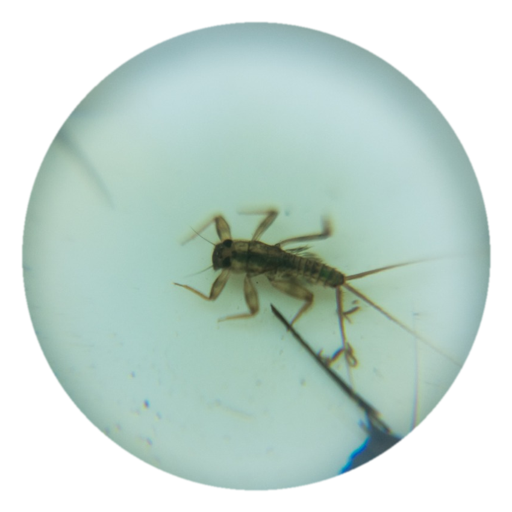

Nos encontramos
Escuchamos las inquietudes de cada territorio y reconocemos los cuerpos de agua que sus comunidades quieren conocer.

GLOBAL WATER WATCHCHILE · Fundación Manzana Verde

Una red que observa, aprende y cuida.
Global Water Watch Chile reúne organizaciones que monitorean ríos, lagunas, lagos y humedales mediante metodologías científicas compartidas.
Fundación Manzana Verde coordina este trabajo con comunidades que generan conocimiento desde sus propios territorios.
Ciencia comunitaria · Formación · Colaboración
Organizaciones que comparten herramientas y conocimiento para cuidar las aguas dulces.
Fortalecemos la capacidad de las comunidades para conocer sus cuerpos de agua, generar información y compartir lo aprendido.
Global Water Watch Chile surge de una necesidad concreta: en 2019, una comunidad de Antihuala buscó herramientas para conocer de manera autónoma la salud ecológica de su laguna. Esa inquietud impulsó a Fundación Manzana Verde a explorar metodologías de monitoreo comunitario. Desde 2022, la Fundación desarrolla en Chile el programa Global Water Watch, vinculado a la Universidad de Auburn.
Hoy el trabajo combina formación práctica, certificaciones, acompañamiento a equipos locales y encuentros para intercambiar experiencias. Las monitoras y los monitores aprenden a observar sus ríos, lagos, lagunas y humedales con procedimientos compartidos, interpretar sus registros y conversar sobre el cuidado del agua desde sus propios territorios.
Escuchamos las inquietudes de cada territorio y reconocemos los cuerpos de agua que sus comunidades quieren conocer.
Compartimos formación, metodologías y prácticas de medición para fortalecer equipos locales autónomos.
Los datos y las experiencias ayudan a seguir cambios en el tiempo, dialogar y orientar acciones de cuidado comunitario.
Conoce algunos registros audiovisuales de los procesos de aprendizaje y observación en el territorio.
El monitoreo comunitario consiste en realizar observaciones periódicas y registrar resultados con técnicas estandarizadas. GWW enseña tres métodos complementarios: permiten conocer características del agua, identificar indicadores bacteriológicos y observar organismos que reflejan condiciones del ecosistema. Un registro aislado no equivale por sí solo a un diagnóstico integral.

Mide temperatura, turbidez, pH, oxígeno disuelto, alcalinidad y dureza total. Ayuda a describir condiciones del agua y sus variaciones.

Utiliza tarjetas de cultivo para identificar y contar colonias de bacterias indicadoras, entre ellas E. coli, siguiendo un protocolo de incubación y lectura.

Reconoce pequeños organismos que viven en el agua y su sensibilidad a las alteraciones del entorno para interpretar la salud ecológica del lugar.
Datos históricos de la Memoria Global Water Watch Chile 2024. No representan cifras actualizadas a 2026.
Recorre Chile y selecciona un cuerpo de agua, o abre el explorador para buscar y filtrar.
Cargando mapa…
Si tu organización busca conocer y proteger un río, lago, laguna o humedal, conversemos sobre el monitoreo comunitario, la formación y las formas de colaboración territorial.
Escríbenos